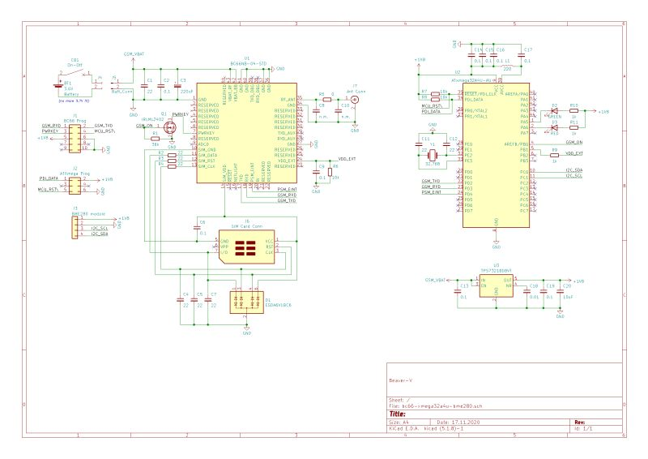

Circuit diagram 
Components
| MCU | ATXMEGA32A4 (Microchip) |
| NB-IOT module | BC66NB-04-STD (Quectel) |
| Sensor | BME280 (Bosch) |
| Battery | Li-SOCl2 Spiral type size D (ER34615M FANSO, LSH20 SAFT, etc.) |
Sending data via NB-IOT modem Quectel BC66 to public monitoring Narodmon
| MCU | ATXMEGA32A4 (Microchip) |
| NB-IOT module | BC66NB-04-STD (Quectel) |
| Sensor | BME280 (Bosch) |
| Battery | Li-SOCl2 Spiral type size D (ER34615M FANSO, LSH20 SAFT, etc.) |